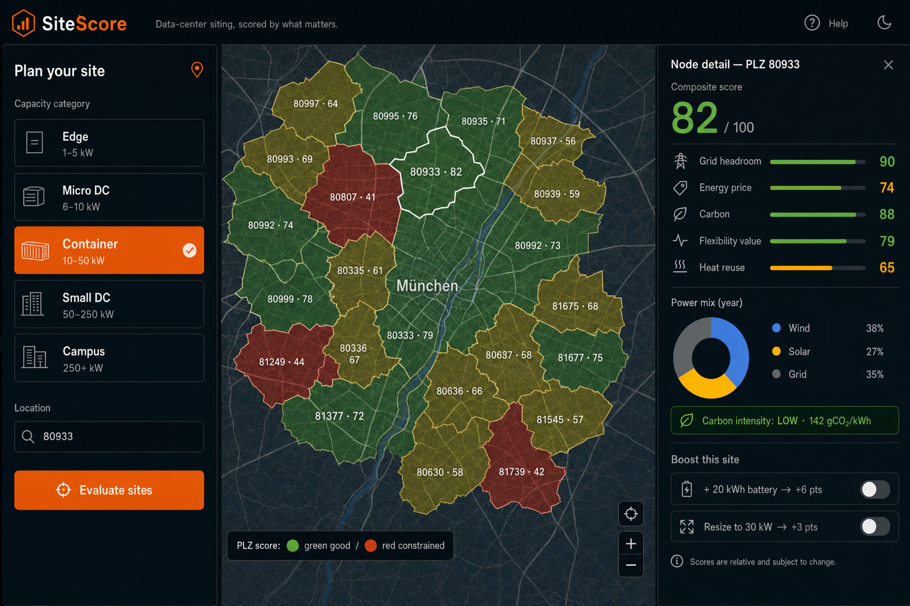
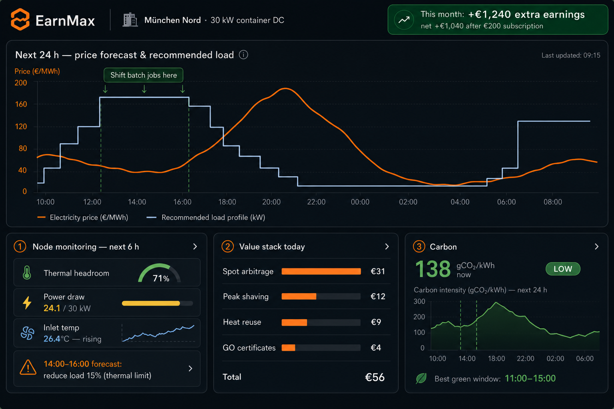

SiteScore + EarnMax
Distributed data centers, sited right and operated as a grid asset.
One-time siting decision report · Yearly operations co-pilot subscription
Data: PyPSA-Eur · Ember · OpenStreetMap · IEA Energy & AI · SMARD
Central data centers wait years for grid connections. Many regions are effectively closed to new large loads.
Renewables get curtailed; green-certificate and carbon-reporting value goes unexploited because load sits in the wrong place at the wrong time.
Central DCs run flat 24/7. The grid increasingly pays for flexible load — and compute is the most shiftable load there is.
Distributed micro/small data centers (1 kW – 250+ kW) can be built inside grid-restricted areas, next to surplus renewables and heat demand — if owners and prosumers know where to build and how to operate.
We deliberately say carbon intensity & certificate value (gCO₂/kWh, GOs, CSRD reporting) — not "carbon credits", which consuming green power does not generate in the EU.
| Layer | Mechanism |
|---|---|
| Spot arbitrage | Shift batch compute to cheap day-ahead/intraday hours |
| Peak shaving | Reduced grid fees (e.g. §19 StromNEV atypical usage) |
| Heat reuse | Sell/self-consume waste heat on premises |
| Green value | GO certificates + low-carbon SLA for compute customers |
"Where and what should I build?"
"How do I run it for maximum value?"
Extra earnings vs. running it yourself — 30 kW container DC
| Without EarnMax (flat profile, standard tariff) | baseline |
| + Spot shifting €7,900 · peak shaving €2,100 · heat reuse €4,000 · certificates €500 | +€14,500/yr |
| − EarnMax subscription | −€2,400/yr |
| Net extra in the operator's pocket | +€12,100/yr (~6×) |
Business model: SiteScore funds customer acquisition (paid report); EarnMax is the recurring revenue. Every SiteScore customer is an EarnMax lead.

The boost toggles are the demo moment: trade-offs become visible and actionable.

The customer math: the €1,240/month shown is extra earnings vs. running the same node without EarnMax. Minus the €200/month subscription → net +€1,040/month on top of his normal business — the dashboard proves it daily.
Recommendations, not actuation — honest scope for a 5-hour build, extensible to control later.
Congestion / spare connection capacity at the node (PyPSA-Eur network data).
Expected procurement cost from zonal prices + local generation profile.
Yearly average + marginal gCO₂/kWh from the local power mix (Ember).
Daily price spread → arbitrage potential for shiftable compute.
Heat-demand proximity from OpenStreetMap (pools, large buildings, greenhouses) — the unique pro-distributed argument.
Battery add-on raises grid-headroom & flexibility subscores; resizing moves the node into a different connection class. Same formula, new inputs → transparent score delta.
Weights are config, not code — tunable live during the demo. Categories (Edge / Micro / Container / Small / Campus) set defaults; the score itself is continuous.
flowchart LR
subgraph OFF["Offline pipeline (Python, runs once before demo)"]
DS["PyPSA-Eur · Ember · SMARD · MaStR · OSM"] --> ETL["ETL + scoring notebook"]
ETL --> GJ["plz_nodes.geojson (PLZ polygons: subscores, mix, carbon)"]
ETL --> TS["profiles.parquet (hourly price / wind / solar)"]
end
subgraph BE["Backend · FastAPI"]
GJ --> API1["GET /nodes?kw=&plz="]
TS --> API2["GET /forecast/:node"]
API2 --> OPT["Heuristic optimizer: shift load to cheap-green hours"]
SIM["Synthetic telemetry generator"] --> API3["GET /monitor/:node"]
end
subgraph FE["Frontend · React + Vite"]
API1 --> MAP["MapLibre map + node panel (SiteScore)"]
OPT --> DASH["Recharts dashboard (EarnMax)"]
API3 --> DASH
MAP --> BOOST["Boost toggles: re-score client-side"]
end
style OFF fill:#16100a,stroke:#33271b,color:#f0e9e2
style BE fill:#16100a,stroke:#33271b,color:#f0e9e2
style FE fill:#16100a,stroke:#33271b,color:#f0e9e2
No auth, no DB, no ML training. Scores live in a static GeoJSON; the API is three read endpoints plus a rule-based optimizer. Everything demo-critical works even if Wi-Fi dies (data is local).
| Layer | Choice | Why |
|---|---|---|
| Frontend | React + Vite + MapLibre GL + Recharts | Fast scaffold, free map tiles, quick charts |
| Backend | FastAPI (Python) | Same language as data pipeline, instant docs |
| Data | GeoJSON + Parquet files | No DB to set up, versionable, offline-safe |
| Pipeline | Pandas notebook | Ember/SMARD CSVs → scores, run once |
| Optimizer | Greedy heuristic | Sort hours by price·carbon, fill load — explainable |
| Hour | Deliverable |
|---|---|
| 0–1 | Repo + scaffold; data person scores PLZ polygons; UI person sets dark theme |
| 1–2 | Map renders scored PLZ areas; FastAPI serves /nodes; forecast profiles loaded |
| 2–3 | Node detail panel (subscores, mix, carbon); optimizer + forecast chart |
| 3–4 | Boost toggles re-score; monitoring panel with synthetic telemetry + alert |
| 4–5 | Value-stack numbers, polish, rehearse demo, freeze |
Cut order if late: monitoring panel → boost toggles → value stack. The map + score + forecast is the irreducible demo.
Navigate this deck: scroll or ↑/↓ keys.